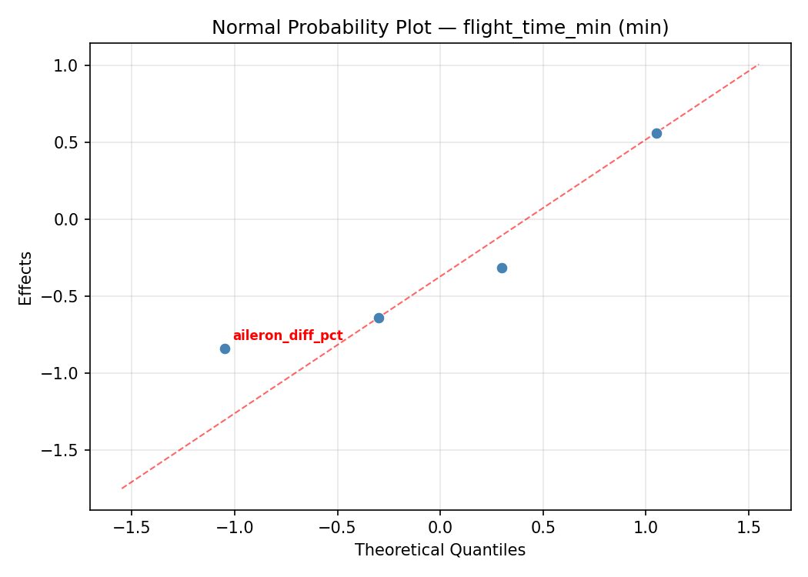
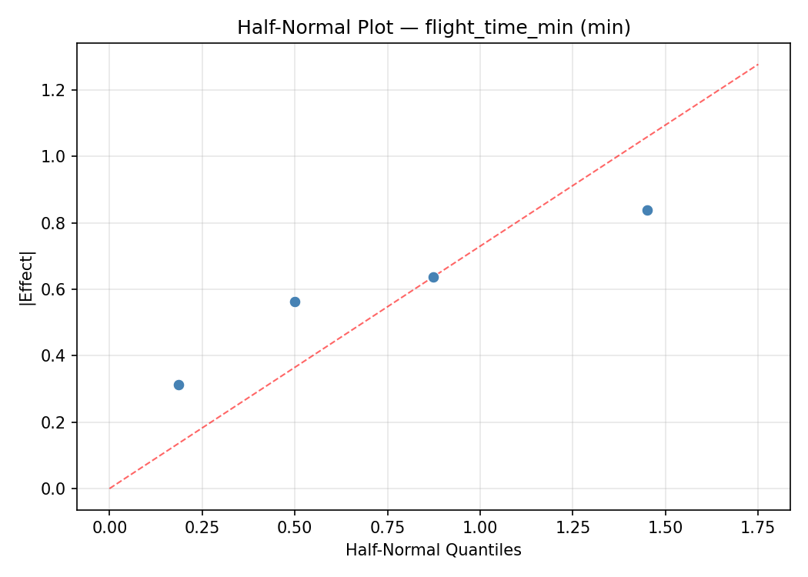
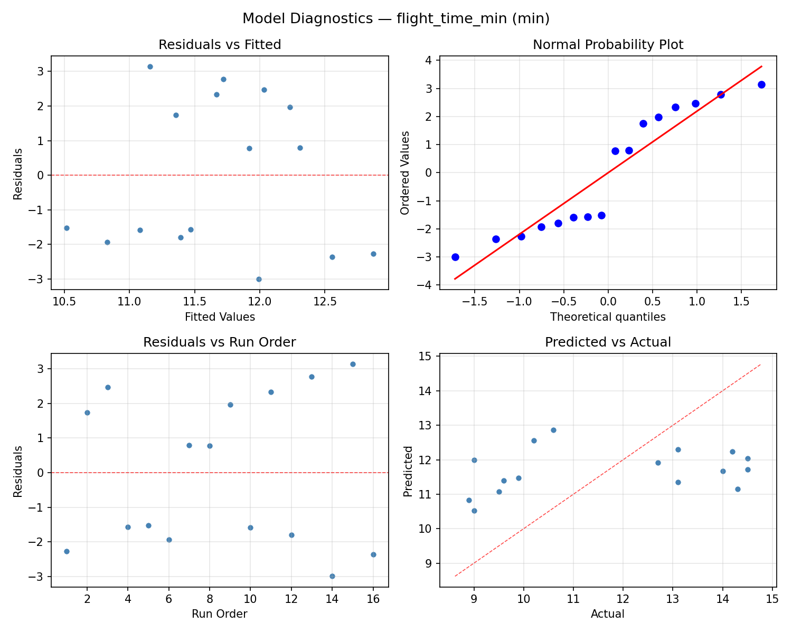
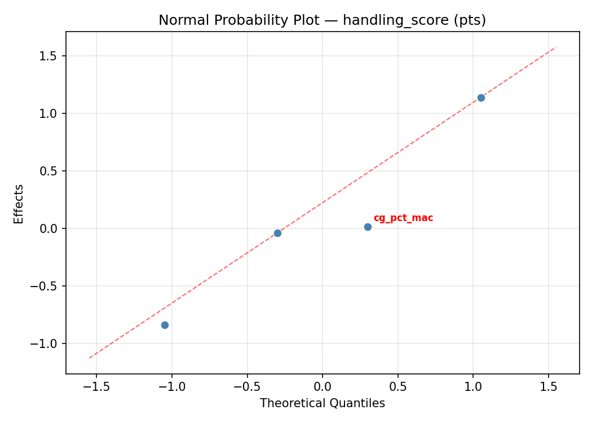
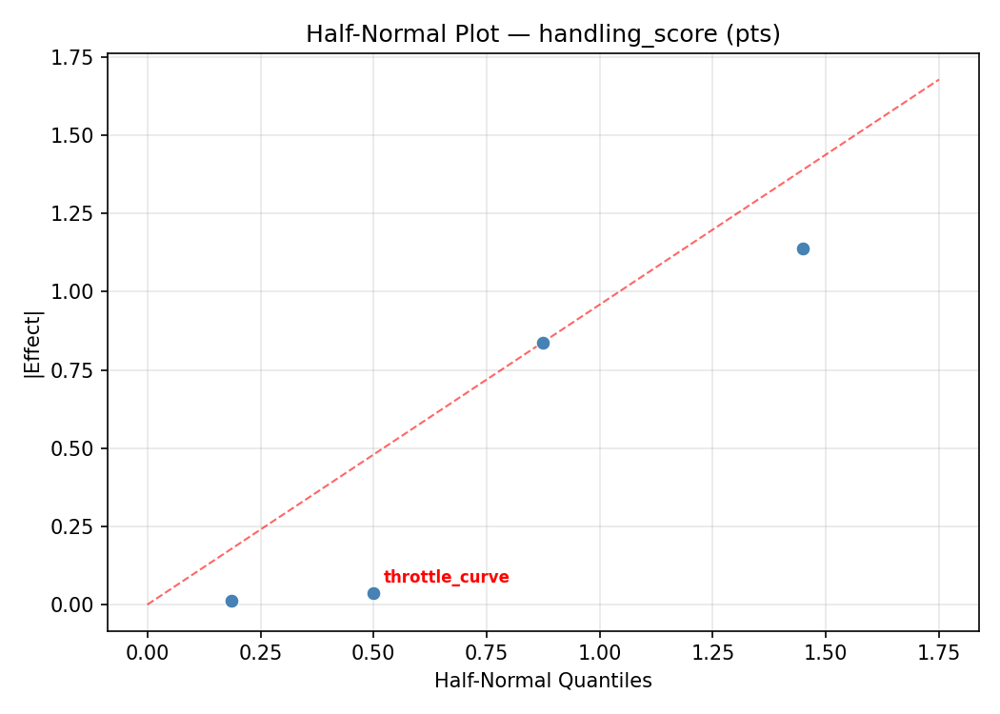
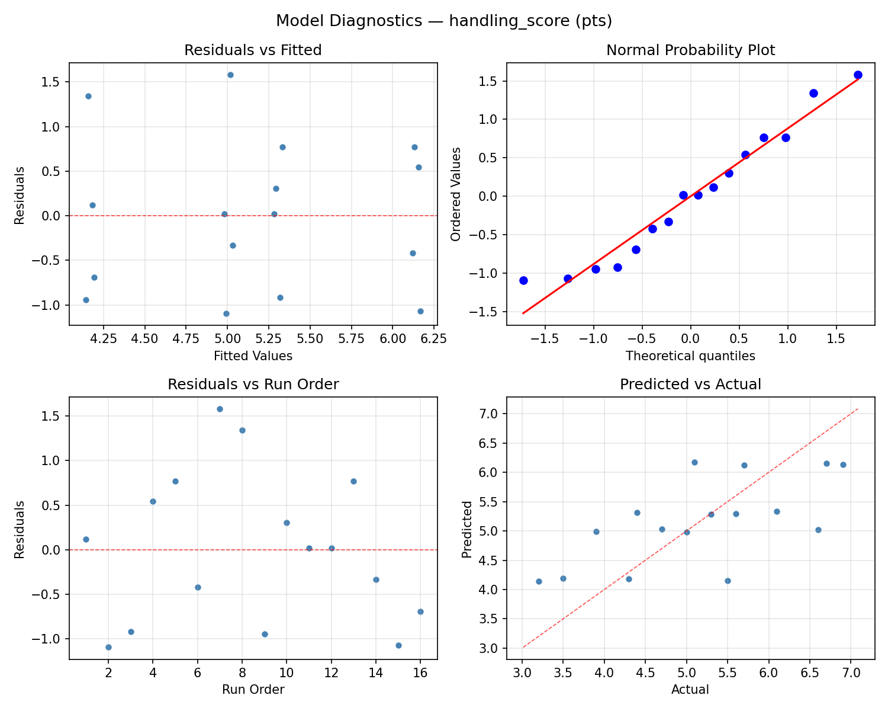

Summary
This experiment investigates rc plane trim settings. Full factorial of elevator trim, aileron differential, throttle curve, and CG position to maximize flight time and handling score.
The design varies 4 factors: elevator pct (%), ranging from -5 to 5, aileron diff pct (%), ranging from 0 to 40, throttle curve (%), ranging from 50 to 100, and cg pct mac (%MAC), ranging from 25 to 35. The goal is to optimize 2 responses: flight time min (min) (maximize) and handling score (pts) (maximize). Fixed conditions held constant across all runs include model = trainer, wingspan = 1200mm.
A full factorial design was used to explore all 16 possible combinations of the 4 factors at two levels. This guarantees that every main effect and interaction can be estimated independently, at the cost of a larger experiment (16 runs).
Quadratic response surface models were fitted to capture potential curvature and factor interactions. The RSM contour plots below visualize how pairs of factors jointly affect each response.
Key Findings
For flight time min, the most influential factors were aileron diff pct (53.9%), throttle curve (20.9%), elevator pct (17.7%). The best observed value was 14.5 (at elevator pct = 5, aileron diff pct = 40, throttle curve = 100).
For handling score, the most influential factors were elevator pct (40.4%), cg pct mac (25.9%), aileron diff pct (18.7%). The best observed value was 6.9 (at elevator pct = 5, aileron diff pct = 40, throttle curve = 50).
Recommended Next Steps
- Consider whether any fixed factors should be varied in a future study.
Experimental Setup
Factors
| Factor | Low | High | Unit |
|---|
elevator_pct | -5 | 5 | % |
aileron_diff_pct | 0 | 40 | % |
throttle_curve | 50 | 100 | % |
cg_pct_mac | 25 | 35 | %MAC |
Fixed: model = trainer, wingspan = 1200mm
Responses
| Response | Direction | Unit |
|---|
flight_time_min | ↑ maximize | min |
handling_score | ↑ maximize | pts |
Configuration
{
"metadata": {
"name": "RC Plane Trim Settings",
"description": "Full factorial of elevator trim, aileron differential, throttle curve, and CG position to maximize flight time and handling score"
},
"factors": [
{
"name": "elevator_pct",
"levels": [
"-5",
"5"
],
"type": "continuous",
"unit": "%"
},
{
"name": "aileron_diff_pct",
"levels": [
"0",
"40"
],
"type": "continuous",
"unit": "%"
},
{
"name": "throttle_curve",
"levels": [
"50",
"100"
],
"type": "continuous",
"unit": "%"
},
{
"name": "cg_pct_mac",
"levels": [
"25",
"35"
],
"type": "continuous",
"unit": "%MAC"
}
],
"fixed_factors": {
"model": "trainer",
"wingspan": "1200mm"
},
"responses": [
{
"name": "flight_time_min",
"optimize": "maximize",
"unit": "min"
},
{
"name": "handling_score",
"optimize": "maximize",
"unit": "pts"
}
],
"settings": {
"operation": "full_factorial",
"test_script": "use_cases/263_rc_plane_trim/sim.sh"
}
}
Experimental Matrix
The Full Factorial Design produces 16 runs. Each row is one experiment with specific factor settings.
| Run | elevator_pct | aileron_diff_pct | throttle_curve | cg_pct_mac |
|---|
| 1 | -5 | 40 | 100 | 35 |
| 2 | 5 | 0 | 50 | 35 |
| 3 | -5 | 40 | 50 | 35 |
| 4 | -5 | 40 | 100 | 25 |
| 5 | 5 | 40 | 100 | 25 |
| 6 | 5 | 0 | 100 | 25 |
| 7 | 5 | 40 | 50 | 25 |
| 8 | 5 | 0 | 50 | 25 |
| 9 | -5 | 0 | 50 | 35 |
| 10 | -5 | 0 | 100 | 25 |
| 11 | 5 | 40 | 50 | 35 |
| 12 | 5 | 40 | 100 | 35 |
| 13 | -5 | 40 | 50 | 25 |
| 14 | 5 | 0 | 100 | 35 |
| 15 | -5 | 0 | 50 | 25 |
| 16 | -5 | 0 | 100 | 35 |
Step-by-Step Workflow
1
Preview the design
$ python doe.py info --config use_cases/263_rc_plane_trim/config.json
2
Generate the runner script
$ python doe.py generate --config use_cases/263_rc_plane_trim/config.json \
--output use_cases/263_rc_plane_trim/results/run.sh --seed 42
3
Execute the experiments
$ bash use_cases/263_rc_plane_trim/results/run.sh
4
Analyze results
$ python doe.py analyze --config use_cases/263_rc_plane_trim/config.json
5
Get optimization recommendations
$ python doe.py optimize --config use_cases/263_rc_plane_trim/config.json
6
Multi-objective optimization
With 2 competing responses, use --multi to find the best compromise via Derringer–Suich desirability.
$ python doe.py optimize --config use_cases/263_rc_plane_trim/config.json --multi
7
Generate the HTML report
$ python doe.py report --config use_cases/263_rc_plane_trim/config.json \
--output use_cases/263_rc_plane_trim/results/report.html
Features Exercised
| Feature | Value |
|---|
| Design type | full_factorial |
| Factor types | continuous (all 4) |
| Arg style | double-dash |
| Responses | 2 (flight_time_min ↑, handling_score ↑) |
| Total runs | 16 |
Analysis Results
Generated from actual experiment runs using the DOE Helper Tool.
Response: flight_time_min
Top factors: aileron_diff_pct (53.9%), throttle_curve (20.9%), elevator_pct (17.7%).
ANOVA
| Source | DF | SS | MS | F | p-value |
|---|
| Source | DF | SS | MS | F | p-value |
| elevator_pct | 1 | 1.2656 | 1.2656 | 0.175 | 0.6933 |
| aileron_diff_pct | 1 | 11.7306 | 11.7306 | 1.619 | 0.2591 |
| throttle_curve | 1 | 1.7556 | 1.7556 | 0.242 | 0.6434 |
| cg_pct_mac | 1 | 0.2256 | 0.2256 | 0.031 | 0.8668 |
| elevator_pct*aileron_diff_pct | 1 | 4.3056 | 4.3056 | 0.594 | 0.4756 |
| elevator_pct*throttle_curve | 1 | 0.1806 | 0.1806 | 0.025 | 0.8807 |
| elevator_pct*cg_pct_mac | 1 | 7.4256 | 7.4256 | 1.025 | 0.3578 |
| aileron_diff_pct*throttle_curve | 1 | 3.3306 | 3.3306 | 0.460 | 0.5278 |
| aileron_diff_pct*cg_pct_mac | 1 | 0.1056 | 0.1056 | 0.015 | 0.9086 |
| throttle_curve*cg_pct_mac | 1 | 10.7256 | 10.7256 | 1.481 | 0.2780 |
| Error | 5 | 36.2181 | 7.2436 | | |
| Total | 15 | 77.2694 | 5.1513 | | |
Pareto Chart

Main Effects Plot

Normal Probability Plot of Effects

Half-Normal Plot of Effects

Model Diagnostics

Response: handling_score
Top factors: elevator_pct (40.4%), cg_pct_mac (25.9%), aileron_diff_pct (18.7%).
ANOVA
| Source | DF | SS | MS | F | p-value |
|---|
| Source | DF | SS | MS | F | p-value |
| elevator_pct | 1 | 2.8056 | 2.8056 | 1.556 | 0.2676 |
| aileron_diff_pct | 1 | 0.6006 | 0.6006 | 0.333 | 0.5889 |
| throttle_curve | 1 | 0.3906 | 0.3906 | 0.217 | 0.6612 |
| cg_pct_mac | 1 | 1.1556 | 1.1556 | 0.641 | 0.4598 |
| elevator_pct*aileron_diff_pct | 1 | 1.2656 | 1.2656 | 0.702 | 0.4404 |
| elevator_pct*throttle_curve | 1 | 2.6406 | 2.6406 | 1.464 | 0.2804 |
| elevator_pct*cg_pct_mac | 1 | 0.1406 | 0.1406 | 0.078 | 0.7913 |
| aileron_diff_pct*throttle_curve | 1 | 0.4556 | 0.4556 | 0.253 | 0.6366 |
| aileron_diff_pct*cg_pct_mac | 1 | 0.1406 | 0.1406 | 0.078 | 0.7913 |
| throttle_curve*cg_pct_mac | 1 | 0.1056 | 0.1056 | 0.059 | 0.8184 |
| Error | 5 | 9.0181 | 1.8036 | | |
| Total | 15 | 18.7194 | 1.2480 | | |
Pareto Chart

Main Effects Plot

Normal Probability Plot of Effects

Half-Normal Plot of Effects

Model Diagnostics

Response Surface Plots
3D surfaces fitted with quadratic RSM. Red dots are observed data points.
flight time min aileron diff pct vs cg pct mac

flight time min aileron diff pct vs throttle curve

flight time min elevator pct vs aileron diff pct

flight time min elevator pct vs cg pct mac

flight time min elevator pct vs throttle curve

flight time min throttle curve vs cg pct mac

handling score aileron diff pct vs cg pct mac

handling score aileron diff pct vs throttle curve

handling score elevator pct vs aileron diff pct

handling score elevator pct vs cg pct mac

handling score elevator pct vs throttle curve

handling score throttle curve vs cg pct mac

Multi-Objective Optimization
When responses compete, Derringer–Suich desirability finds the best compromise.
Each response is scaled to a 0–1 desirability, then combined via a weighted geometric mean.
Overall Desirability
D = 0.8312
Per-Response Desirability
| Response | Weight | Desirability | Predicted | Dir |
|---|
flight_time_min |
1.0 |
|
14.50 0.9545 14.50 min |
↑ |
handling_score |
1.5 |
|
6.10 0.7580 6.10 pts |
↑ |
Recommended Settings
| Factor | Value |
|---|
elevator_pct | -5 % |
aileron_diff_pct | 0 % |
throttle_curve | 100 % |
cg_pct_mac | 35 %MAC |
Source: from observed run #13
Trade-off Summary
Sacrifice = how much worse than single-objective best.
| Response | Predicted | Best Observed | Sacrifice |
|---|
handling_score | 6.10 | 6.90 | +0.80 |
Top 3 Runs by Desirability
| Run | D | Factor Settings |
|---|
| #7 | 0.8159 | elevator_pct=5, aileron_diff_pct=40, throttle_curve=100, cg_pct_mac=25 |
| #15 | 0.6481 | elevator_pct=-5, aileron_diff_pct=40, throttle_curve=100, cg_pct_mac=25 |
Model Quality
| Response | R² | Type |
|---|
handling_score | 0.2192 | linear |
Full Multi-Objective Output
============================================================
MULTI-OBJECTIVE OPTIMIZATION
Method: Derringer-Suich Desirability Function
============================================================
Overall desirability: D = 0.8312
Response Weight Desirability Predicted Direction
---------------------------------------------------------------------
flight_time_min 1.0 0.9545 14.50 min ↑
handling_score 1.5 0.7580 6.10 pts ↑
Recommended settings:
elevator_pct = -5 %
aileron_diff_pct = 0 %
throttle_curve = 100 %
cg_pct_mac = 35 %MAC
(from observed run #13)
Trade-off summary:
flight_time_min: 14.50 (best observed: 14.50, sacrifice: +0.00)
handling_score: 6.10 (best observed: 6.90, sacrifice: +0.80)
Model quality:
flight_time_min: R² = 0.5152 (linear)
handling_score: R² = 0.2192 (linear)
Top 3 observed runs by overall desirability:
1. Run #13 (D=0.8312): elevator_pct=-5, aileron_diff_pct=0, throttle_curve=100, cg_pct_mac=35
2. Run #7 (D=0.8159): elevator_pct=5, aileron_diff_pct=40, throttle_curve=100, cg_pct_mac=25
3. Run #15 (D=0.6481): elevator_pct=-5, aileron_diff_pct=40, throttle_curve=100, cg_pct_mac=25
Full Analysis Output
=== Main Effects: flight_time_min ===
Factor Effect Std Error % Contribution
--------------------------------------------------------------
aileron_diff_pct 1.7125 0.5674 53.9%
throttle_curve -0.6625 0.5674 20.9%
elevator_pct 0.5625 0.5674 17.7%
cg_pct_mac -0.2375 0.5674 7.5%
=== ANOVA Table: flight_time_min ===
Source DF SS MS F p-value
-----------------------------------------------------------------------------
elevator_pct 1 1.2656 1.2656 0.175 0.6933
aileron_diff_pct 1 11.7306 11.7306 1.619 0.2591
throttle_curve 1 1.7556 1.7556 0.242 0.6434
cg_pct_mac 1 0.2256 0.2256 0.031 0.8668
elevator_pct*aileron_diff_pct 1 4.3056 4.3056 0.594 0.4756
elevator_pct*throttle_curve 1 0.1806 0.1806 0.025 0.8807
elevator_pct*cg_pct_mac 1 7.4256 7.4256 1.025 0.3578
aileron_diff_pct*throttle_curve 1 3.3306 3.3306 0.460 0.5278
aileron_diff_pct*cg_pct_mac 1 0.1056 0.1056 0.015 0.9086
throttle_curve*cg_pct_mac 1 10.7256 10.7256 1.481 0.2780
Error 5 36.2181 7.2436
Total 15 77.2694 5.1513
=== Interaction Effects: flight_time_min ===
Factor A Factor B Interaction % Contribution
------------------------------------------------------------------------
throttle_curve cg_pct_mac -1.6375 30.8%
elevator_pct cg_pct_mac -1.3625 25.6%
elevator_pct aileron_diff_pct 1.0375 19.5%
aileron_diff_pct throttle_curve 0.9125 17.1%
elevator_pct throttle_curve 0.2125 4.0%
aileron_diff_pct cg_pct_mac -0.1625 3.1%
=== Summary Statistics: flight_time_min ===
elevator_pct:
Level N Mean Std Min Max
------------------------------------------------------------
-5 8 11.4125 2.4839 8.9000 14.5000
5 8 11.9750 2.1651 9.0000 14.5000
aileron_diff_pct:
Level N Mean Std Min Max
------------------------------------------------------------
0 8 10.8375 2.1810 9.0000 14.5000
40 8 12.5500 2.1461 8.9000 14.5000
throttle_curve:
Level N Mean Std Min Max
------------------------------------------------------------
100 8 12.0250 2.4200 9.0000 14.5000
50 8 11.3625 2.2206 8.9000 14.5000
cg_pct_mac:
Level N Mean Std Min Max
------------------------------------------------------------
25 8 11.8125 2.2813 9.0000 14.5000
35 8 11.5750 2.4088 8.9000 14.5000
=== Main Effects: handling_score ===
Factor Effect Std Error % Contribution
--------------------------------------------------------------
elevator_pct 0.8375 0.2793 40.4%
cg_pct_mac 0.5375 0.2793 25.9%
aileron_diff_pct -0.3875 0.2793 18.7%
throttle_curve -0.3125 0.2793 15.1%
=== ANOVA Table: handling_score ===
Source DF SS MS F p-value
-----------------------------------------------------------------------------
elevator_pct 1 2.8056 2.8056 1.556 0.2676
aileron_diff_pct 1 0.6006 0.6006 0.333 0.5889
throttle_curve 1 0.3906 0.3906 0.217 0.6612
cg_pct_mac 1 1.1556 1.1556 0.641 0.4598
elevator_pct*aileron_diff_pct 1 1.2656 1.2656 0.702 0.4404
elevator_pct*throttle_curve 1 2.6406 2.6406 1.464 0.2804
elevator_pct*cg_pct_mac 1 0.1406 0.1406 0.078 0.7913
aileron_diff_pct*throttle_curve 1 0.4556 0.4556 0.253 0.6366
aileron_diff_pct*cg_pct_mac 1 0.1406 0.1406 0.078 0.7913
throttle_curve*cg_pct_mac 1 0.1056 0.1056 0.059 0.8184
Error 5 9.0181 1.8036
Total 15 18.7194 1.2480
=== Interaction Effects: handling_score ===
Factor A Factor B Interaction % Contribution
------------------------------------------------------------------------
elevator_pct throttle_curve 0.8125 36.1%
elevator_pct aileron_diff_pct -0.5625 25.0%
aileron_diff_pct throttle_curve 0.3375 15.0%
elevator_pct cg_pct_mac -0.1875 8.3%
aileron_diff_pct cg_pct_mac 0.1875 8.3%
throttle_curve cg_pct_mac 0.1625 7.2%
=== Summary Statistics: handling_score ===
elevator_pct:
Level N Mean Std Min Max
------------------------------------------------------------
-5 8 4.7375 1.0225 3.2000 6.1000
5 8 5.5750 1.1081 3.9000 6.9000
aileron_diff_pct:
Level N Mean Std Min Max
------------------------------------------------------------
0 8 5.3500 1.1904 3.5000 6.9000
40 8 4.9625 1.0822 3.2000 6.6000
throttle_curve:
Level N Mean Std Min Max
------------------------------------------------------------
100 8 5.3125 0.9015 3.9000 6.9000
50 8 5.0000 1.3438 3.2000 6.7000
cg_pct_mac:
Level N Mean Std Min Max
------------------------------------------------------------
25 8 4.8875 1.0218 3.2000 6.7000
35 8 5.4250 1.2104 3.5000 6.9000
Optimization Recommendations
=== Optimization: flight_time_min ===
Direction: maximize
Best observed run: #3
elevator_pct = 5
aileron_diff_pct = 40
throttle_curve = 100
cg_pct_mac = 35
Value: 14.5
RSM Model (linear, R² = 0.0188, Adj R² = -0.3380):
Coefficients:
intercept +11.6938
elevator_pct +0.1688
aileron_diff_pct -0.0938
throttle_curve -0.2313
cg_pct_mac +0.0062
RSM Model (quadratic, R² = 0.6729, Adj R² = -3.9062):
Coefficients:
intercept +2.3388
elevator_pct +0.1687
aileron_diff_pct -0.0938
throttle_curve -0.2313
cg_pct_mac +0.0063
elevator_pct*aileron_diff_pct +0.0562
elevator_pct*throttle_curve +1.1437
elevator_pct*cg_pct_mac -0.2437
aileron_diff_pct*throttle_curve -0.7187
aileron_diff_pct*cg_pct_mac +0.2188
throttle_curve*cg_pct_mac +1.1063
elevator_pct^2 +2.3388
aileron_diff_pct^2 +2.3388
throttle_curve^2 +2.3388
cg_pct_mac^2 +2.3388
Curvature analysis:
elevator_pct coef=+2.3388 convex (has a minimum)
aileron_diff_pct coef=+2.3388 convex (has a minimum)
throttle_curve coef=+2.3388 convex (has a minimum)
cg_pct_mac coef=+2.3388 convex (has a minimum)
Notable interactions:
elevator_pct*throttle_curve coef=+1.1437 (synergistic)
throttle_curve*cg_pct_mac coef=+1.1063 (synergistic)
aileron_diff_pct*throttle_curve coef=-0.7187 (antagonistic)
Predicted optimum (from linear model, at observed points):
elevator_pct = 5
aileron_diff_pct = 0
throttle_curve = 50
cg_pct_mac = 35
Predicted value: 12.1938
Surface optimum (via L-BFGS-B, linear model):
elevator_pct = 5
aileron_diff_pct = 0
throttle_curve = 50
cg_pct_mac = 35
Predicted value: 12.1938
Model quality: Weak fit — consider adding center points or using a different design.
Factor importance:
1. throttle_curve (effect: 0.5, contribution: 46.3%)
2. elevator_pct (effect: 0.3, contribution: 33.8%)
3. aileron_diff_pct (effect: -0.2, contribution: 18.8%)
4. cg_pct_mac (effect: 0.0, contribution: 1.2%)
=== Optimization: handling_score ===
Direction: maximize
Best observed run: #5
elevator_pct = 5
aileron_diff_pct = 40
throttle_curve = 50
cg_pct_mac = 35
Value: 6.9
RSM Model (linear, R² = 0.0172, Adj R² = -0.3401):
Coefficients:
intercept +5.1563
elevator_pct +0.0813
aileron_diff_pct -0.0688
throttle_curve -0.0063
cg_pct_mac -0.0938
RSM Model (quadratic, R² = 0.4312, Adj R² = -7.5324):
Coefficients:
intercept +1.0312
elevator_pct +0.0813
aileron_diff_pct -0.0688
throttle_curve -0.0062
cg_pct_mac -0.0938
elevator_pct*aileron_diff_pct +0.3313
elevator_pct*throttle_curve -0.5062
elevator_pct*cg_pct_mac +0.3313
aileron_diff_pct*throttle_curve -0.0813
aileron_diff_pct*cg_pct_mac -0.0438
throttle_curve*cg_pct_mac -0.0063
elevator_pct^2 +1.0313
aileron_diff_pct^2 +1.0313
throttle_curve^2 +1.0313
cg_pct_mac^2 +1.0313
Curvature analysis:
elevator_pct coef=+1.0313 convex (has a minimum)
aileron_diff_pct coef=+1.0313 convex (has a minimum)
throttle_curve coef=+1.0313 convex (has a minimum)
cg_pct_mac coef=+1.0313 convex (has a minimum)
Notable interactions:
elevator_pct*throttle_curve coef=-0.5062 (antagonistic)
elevator_pct*cg_pct_mac coef=+0.3313 (synergistic)
elevator_pct*aileron_diff_pct coef=+0.3313 (synergistic)
Predicted optimum (from linear model, at observed points):
elevator_pct = 5
aileron_diff_pct = 0
throttle_curve = 50
cg_pct_mac = 25
Predicted value: 5.4063
Surface optimum (via L-BFGS-B, linear model):
elevator_pct = 5
aileron_diff_pct = 0
throttle_curve = 50
cg_pct_mac = 25
Predicted value: 5.4063
Model quality: Weak fit — consider adding center points or using a different design.
Factor importance:
1. cg_pct_mac (effect: -0.2, contribution: 37.5%)
2. elevator_pct (effect: 0.2, contribution: 32.5%)
3. aileron_diff_pct (effect: -0.1, contribution: 27.5%)
4. throttle_curve (effect: 0.0, contribution: 2.5%)